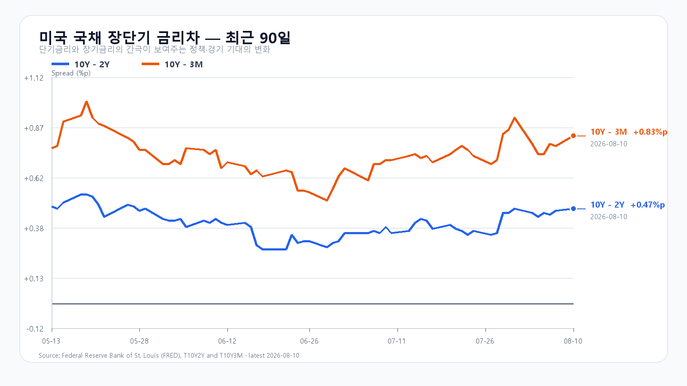
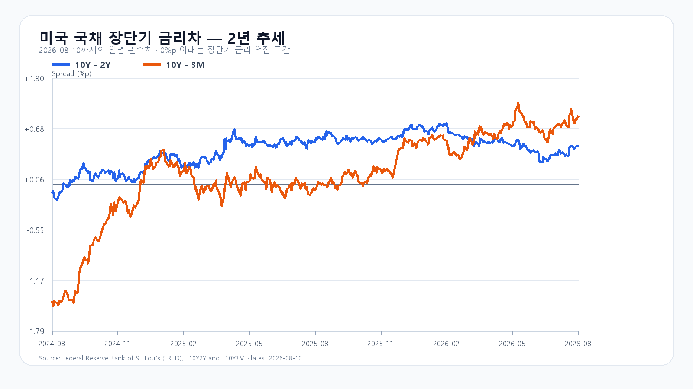

오늘의 한 문장
유가와 장기금리 상승, 미국 반도체 급락이 KOSPI를 누르고 있습니다. 외국인 현물 매수가 이어져도 프로그램 매도가 남아 있는 동안에는 6,213.78선 방어와 6,300선 회복을 따로 봐야 합니다.
6,200선에서 맞붙은 두 힘
KOSPI는 전일 6,299.66에서 출발해 장 초반 6,213.78까지 밀렸습니다. 09:22 KST 현재 6,226.84로 1.16% 하락했습니다. 삼성전자는 229,000원, SK하이닉스는 1,387,000원으로 미국 반도체 약세를 반영하고 있습니다.
수급은 한쪽으로 정리되지 않았습니다. 외국인은 KOSPI 현물을 821억원 순매수하고 있지만 기관은 1,457억원 순매도하고 있습니다. 프로그램 전체도 509억원 순매도입니다. 외국인 현물 매수가 대형 반도체의 가격 하락을 멈추지 못한다면 지수보다 수급 숫자가 좋아 보이는 착시가 생깁니다. 6,200선 위에서 저점을 높이고 프로그램 매도가 줄어야 하단 방어가 확인됩니다.
| 항목 | 확인값 | 오늘 기준 |
|---|---|---|
| KOSPI | 6,226.84 · -1.16% | 6,213.78 방어 · 6,300 회복 |
| KODEX 레버리지 | 88,355원 | 88,000원 방어 · 90,770원 회복 |
| 외국인 현물 | +821억원 | 가격과 동반 회복하는지 확인 |
| 프로그램 전체 | -509억원 | 순매도 축소 여부 |
| 달러/원 | 1,418.00원 | 1,420원 안착 여부 |
유가와 금리가 반도체를 눌렀다
8월 10일 미국장에서 S&P500은 0.06%, Nasdaq은 0.32%, Dow는 0.11% 내렸습니다. 지수보다 반도체의 낙폭이 컸습니다. 필라델피아 반도체지수는 2.94%, SOXX는 2.55% 하락했고 Nvidia와 AMD는 각각 2.86%, Micron은 1.89%, Broadcom은 1.25% 밀렸습니다.
브렌트유는 호르무즈 해협의 원유 수송이 언제 정상화될지 불확실해지며 5% 오른 87.72달러에 마감했습니다. WTI도 5.03% 상승한 82.11달러였습니다. 미국 10년물 금리는 4.70%로 4.65%에서 5bp 올랐습니다. 수요일 CPI를 앞두고 유가와 금리가 동시에 오르자 반도체의 높은 밸류에이션이 먼저 압박받았습니다.
AI 투자와 메모리 공급 부족은 꺾이지 않았다
Nvidia는 Apollo·BlackRock·Blackstone·Brookfield·Goldman Sachs·KKR와 함께 AI 컴퓨팅 인프라에 5,000억달러가 넘는 제3자 자본을 동원하는 금융 플랫폼을 발표했습니다. 데이터센터 투자 규모가 커질수록 HBM·서버 DRAM·기업용 SSD의 수요 기반도 넓어집니다. 다만 시장은 장기 수요보다 막대한 설비투자의 자금 조달과 투자 회수 속도를 더 엄격하게 묻고 있습니다.
TrendForce의 최신 공개 자료에서도 서버 수요에 밀린 PC DRAM 공급이 줄어드는 구조가 이어집니다. DDR5 16GB UDIMM 현물 평균은 222.50달러로 주간 3.49%, DDR5 32GB RDIMM은 1,565달러로 1.29%, DDR4 16GB UDIMM은 158.90달러로 1.86% 올랐습니다. 실물 공급 부족은 삼성전자와 SK하이닉스의 중기 이익을 지지하지만, 오늘 주가에는 유가·금리·프로그램 수급이 더 빠르게 작용합니다.
미 국채 장단기 금리차
8월 10일 FRED 확정치에서 10년-2년물 금리차는 +0.47%포인트, 10년-3개월물 금리차는 +0.83%포인트입니다. 역전은 해소됐지만 반도체에는 금리차보다 10년물 절대금리 4.70%가 더 큰 부담입니다.


미국 CPI를 앞둔 경계
| 시각 | 이벤트 | 시장 경로 |
|---|---|---|
| 8월 12일 21:30 | 미국 7월 CPI·실질임금 | 유가 상승 뒤 금리와 달러 방향 결정 |
| 8월 13일 21:30 | 미국 7월 PPI·신규 실업수당 | 기업 원가와 고용 둔화 재확인 |
| 8월 14일 21:30 | 미국 7월 소매판매 | 고용 감소가 소비로 번졌는지 확인 |
시장은 7월 CPI가 전년 대비 3.4%로 6월 3.5%보다 소폭 둔화할 것으로 보고 있습니다. 물가가 예상대로 낮아져야 유가 급등과 10년물 4.70%의 부담이 완화됩니다. CPI가 다시 높아지면 반도체는 수요가 강해도 할인율 상승을 피하기 어렵습니다.
오늘의 시나리오와 확인 기준
외국인 현물 매수가 하단을 받치지만 프로그램 매도와 미국 반도체 급락이 6,300선 안착을 어렵게 합니다.
프로그램 매도가 순매수로 돌아서고 삼성전자·SK하이닉스가 시가를 회복해야 합니다.
6,213.78을 다시 이탈하고 외국인 현물까지 매도로 돌아서면 6,100선이 다음 방어 구간입니다.
KODEX 레버리지는 88,000원 방어와 전일 종가 90,770원 회복을 나눠 봅니다. 지수가 6,300선을 회복해도 프로그램 매도가 이어지면 반등의 지속성은 약합니다.
오늘 판단은 공격 25점 · 관망 55점 · 방어 20점입니다.
자료 기준
한국 시세와 수급은 Naver Finance, 미국 시장과 유가·금리 반응은 AP, AI 인프라 금융 플랫폼은 Nvidia, CPI·PPI 일정은 미국 노동통계국, 메모리 현물가는 TrendForce, 금리차는 FRED 자료를 사용했습니다.